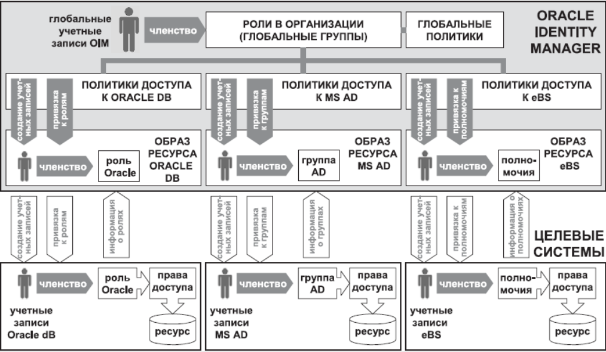
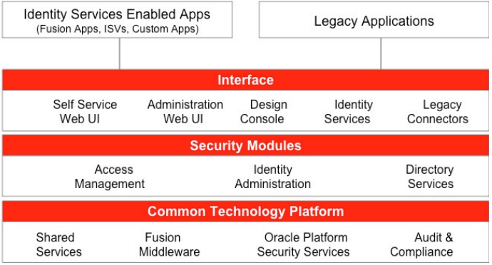

|
Система централизованного управления
учетными записями для ОАО "Вимм-Билль-Данн"
|
|
Цель и задачи выполнения работы
Основной целью выполнения работы является организация автоматизированного процесса согласования информации о сотруднике и правах его доступа к функциям и данным во всех системах с единым источником достоверных данных путем построения единого хранилища УЗ и обеспечение централизованного управления УЗ в интегрированных системах.
Пример подключения Oracle Identity Manager к трем целевым IT-системам:

Архитектура Oracle Identity Manager:

Основными задачами выполнения работы являются:
- техническое проектирование СЦУУЗ;
- разработка эксплуатационной документации;
- проектирование и разработка коннекторов на тестовом полигоне;
- создание единого хранилища УЗ пользователей;
- организация процесса получения информации о сотруднике из источника достоверных данных (БОСС-Кадровик) в автоматическом (запуск по расписанию) и ручном режимах;
- организация процессов изменения атрибутов учетных записей и прав доступа в интегрированных системах;
- формализация правил и политик предоставления сотрудникам доступа к информационным системам;
- настройка в СЦУУЗ процесса согласования и автоматического предоставления прав доступа к ресурсам информационных систем на основании определенного перечня ролей и полномочий и утвержденных процедур;
- Обеспечение синхронизации через интерфейс в системах OEBS, OIM и HelpDesk справочников:
- Справочник владельцев ресурсов и полномочий (ролей);
- Справочники филиалов/площадок/складов;
обеспечение ведения в СЦУУЗ справочников владельцев ресурсов/полномочий, филиалов/площадок/складов;
формирование оперативной и исторической отчетности о правах доступа сотрудников к информационным системам;
внедрение в опытную эксплуатацию и доработка коннекторов и эксплуатационной документации;
внедрение СЦУУЗ в промышленную эксплуатацию.
Характеристики создаваемой системы
Общие положения
Существующая инфраструктура IT Заказчика представляет собой распределенную по территории информационно-технологическую систему, которая характеризуется высокой степенью сложности, широким спектром решаемых подсистемами прикладных задач, а также разнообразием парка оборудования и базового программного обеспечения.
На сегодняшний день существует несколько систем, имеющих собственные методы управления идентификационными данными пользователей, а в рамках развития IT-инфраструктуры Заказчика предусматривается как развитие АСУ, автоматизирующих отдельные бизнес-процессы компании, так и более полная интеграция этих автоматизированных систем. Это в свою очередь ведет к дальнейшему усложнению системы контроля над УЗ пользователей. В связи с этим, ОАО «Вимм-Билль-Данн», было принято решение о создании единой СЦУУЗ.
Предлагаемое решение
Результатом выполнения данного проекта в ИТ-инфраструктуре Заказчика будет создание программно-аппаратного комплекса, обеспечивающего:
- централизованное хранение актуальных и исторических данных о правах доступа сотрудников к информационным системам;
- единую точку управления доступом пользователей в интегрированных системах;
- формирование оперативной и исторической отчетности для выполнения задач контроля, анализа и аудита предоставленного доступа.
В результате выполнения данной работы схема управления УЗ будет выглядеть следующим образом: в кадровой системе «БОСС-Кадровик» регистрируются данные новых сотрудников и вносятся изменения в данные уже зарегистрированных сотрудников. Далее запускается процесс обновления Буферной таблицы и процесс согласования данных с хранилищем учетных записей СЦУУЗ. Следующим этапом инициируется процесс согласования данных между СЦУУЗ и интегрированными системами.
Для предоставления пользователю доступа к ресурсу (интегрированной системе) будет использоваться бизнес-процесс согласования доступа, который будет включать в себя утверждение заявки руководителем пользователя и владельцем ресурса. По результатам согласования заявки доступ будет предоставлен автоматически средствами Oracle Identity Manager.
Для уведомлений в Oracle Identity Manager (OIM) будут созданы соответствующие списки рассылки электронных сообщений, которые могут в дальнейшем уточняться и изменяться.
Каждое согласование должно будет заканчиваться уведомлением в группу ответственных лиц. Сообщения о нарушении безопасности (несанкционированные действия) должны будут направляться в группу безопасности. Также уведомления о результате выполнения заявки на предоставление доступа с определенным полномочием будет высылаться инициатору запроса на доступ.
При переводе из подразделения в подразделение, а так же при изменении должности, будут аннулированы все права и уровни доступа, кроме прав и уровней доступа, назначенных в результате согласования, и назначены права по умолчанию.
При несанкционированном создании УЗ в целевых системах и несанкционированном изменении уровня доступа СЦУУЗ будет отправлено уведомление в группу безопасности. Под несанкционированным созданием УЗ подразумевается создание УЗ в целевой системе в обход OIM. Под несанкционированным изменением уровня доступа подразумевается изменение уровня доступа к целевой системе в обход OIM.
|